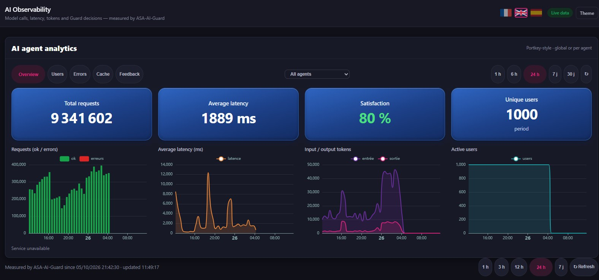
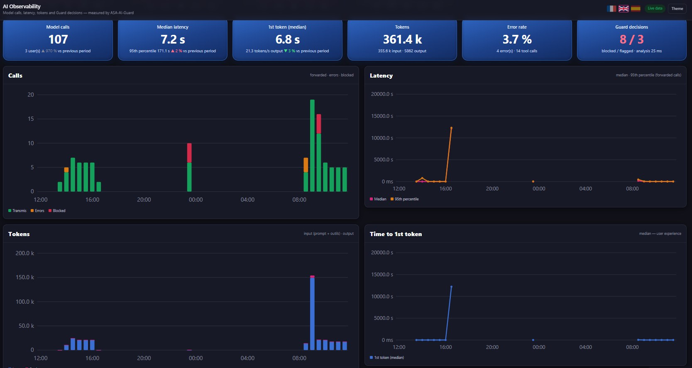
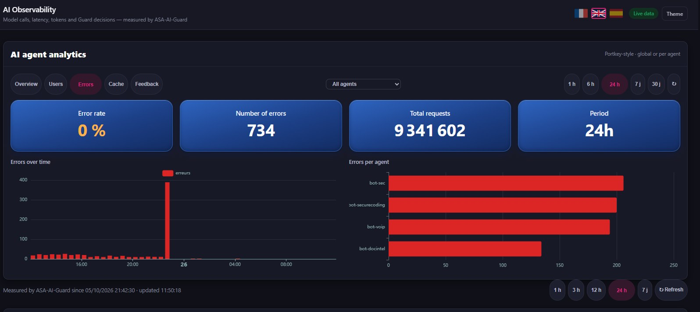
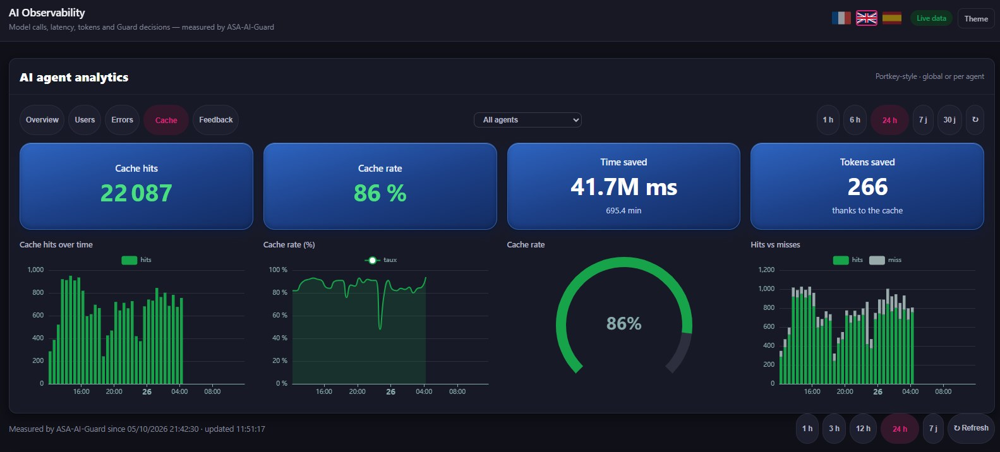
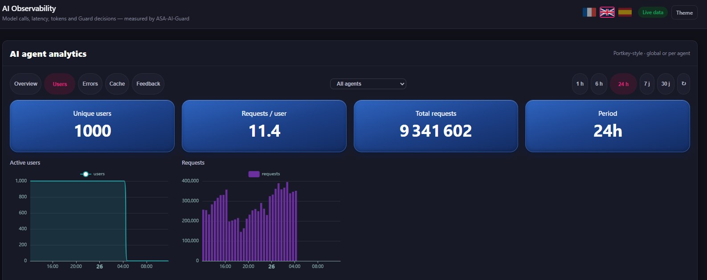
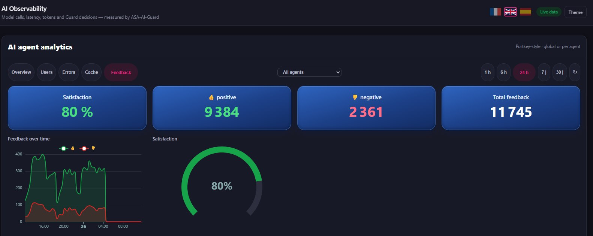

Your AI agents are in production. Can you see what they're doing?
Every prompt, every token, every slow answer, every blocked attack. SENTINEL AI Observability gives your security and platform teams one live view of all your AI agents, on your own infrastructure.
On-prem · Per agent and per model · Live data · No prompts leave your network

The overview: requests, latency, tokens and active users across every agent, at a glance.
Questions your board will ask.
Answers you'll have in seconds.
A tour of SENTINEL AI Observability
Real screens. Filter globally or per agent, from the last hour to the last 30 days.
Every call goes through the Guard. Every decision is on the record.
ASA-AI-Guard sits between your users and your models. It inspects each prompt in milliseconds, blocks or flags what looks like injection or abuse, and measures everything it lets through.
- Calls forwarded, errored and blocked, hour by hour
- Median and 95th-percentile latency, time to first token
- Guard decisions counted and timestamped for your audit trail

Know which model does the work, and what it costs.
Invocations, latency, token consumption and errors, broken down per model across the whole agent gateway. Spot the model that slows down or starts failing before your users do.
- Series per model, side by side
- Input and output tokens per period
- Errors per model, spikes visible immediately

When an agent breaks, you see which one, and when.
Errors over time and per agent. A spike at 23:00 on one agent stops being a mystery and becomes a ticket with a name, a time and a scope.
- Error rate and error count per period
- Ranking of agents by errors
- Correlate with latency and Guard activity

Stop paying twice for the same answer.
The semantic cache answers repeated questions instantly. The dashboard shows exactly what it saves: hits, hit rate, time saved and tokens saved.
- Cache hits vs misses over time
- Hit rate gauge, per agent or global
- Time and tokens saved, in plain numbers

Measure adoption, not just uptime.
Unique users, active users and requests per user show whether your agents are becoming part of how people work, or quietly ignored.
- Active users over time
- Requests per user
- Per-agent drill-down

Your users tell you if the answers are good. Now you can listen.
Thumbs up, thumbs down, satisfaction rate over time. Quality becomes a number you can track, compare between agents and improve.
- Satisfaction rate gauge
- Positive and negative feedback over time
- Compare agents and models on quality

Measured in our lab, last 24 hours
Figures from the ASA AI lab, including load testing. Your numbers will differ: that's what the demo is for.
AI in production, two ways
Without observability
- You find out an agent is down when users complain
- The token bill arrives, nobody can explain it
- Prompt injection attempts go unnoticed
- "Is it any good?" has no answer
With SENTINEL AI Observability
- Errors and slowdowns flagged per agent, per model
- Token spend and cache savings in one view
- Every blocked or flagged prompt on the record
- Satisfaction tracked like any other KPI
You can't secure what you can't see.
In 30 minutes, we'll show you SENTINEL AI Observability on your own AI agents and models: usage, cost, reliability, quality and security, in one live view.
On-prem · Works with your existing LLMs and agents · Built for regulated environments (DORA, NIS2, GDPR, EU AI Act)